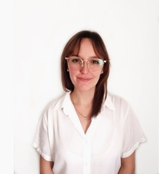

¿Quien soy?

Hola! Mi nombre es Abril Tischler, soy diseñadora gráfica freelance y estudiante avanzada en Diseño de la Comunicación Visual en la Facultad de Arquitectura, Diseño y Urbanismo de la Universidad Nacional del Litoral.
Actualmente me encuentro haciendo una especialización en Desarrollo Web en Coderhouse.